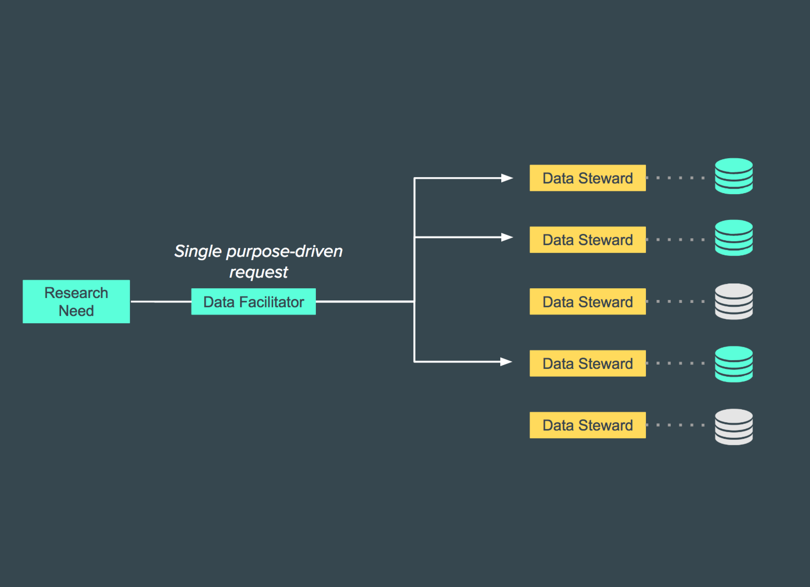

DATA CONCIERGE
Strengthening the data community at the University of Michigan.
I used contextual inquiry while working on a consulting project for Information Quest, a team within the University of Michigan Information and Technology Services department, in order to investigate how we could improve the data-requesting process between departments at the university.
I worked on a team of four students, and together we developed a five key recommendations to ensure their new Data Concierge platform met the needs of data requesters and stewards at UM.
My Role: UX Researcher
Timeline: September – December 2016
Process:

Overview
Our client supports higher-level university administrators and executives with data integration, business intelligence dashboards, and reporting tools. They found that individuals requesting data from other departments are often inconvenienced by long wait times and nonresponsive outcomes, a result of relying on tenuous word-of-mouth and personal connections.
Our client began development of a ‘Data Concierge’ platform to serve as a one-stop-shop, ensuring data requesters have a centralized, easy-to-use service to make, track, and fulfill their requests. Our team investigated ways in which the Data Concierge could facilitate data requesting at U-M over time, with two overarching research questions guiding our process:
- What are the specific steps, challenges, and opportunities that currently exist in the data requesting process at U-M?
- How do the stakeholders feel about the data request process, and how could they accomplish their data needs in a more efficient and satisfying way?
Methods
Literature Review
Our group first conducted background research in:
- Data stewardship roles and responsibilities
- Data hierarchies and documented system limitations at the University of Michigan
- The implementation of business intelligence using data systems in higher education
- Data-as-a-service and its implementation in higher education
Contextual Interviews
We then conducted 7 semi-structured, contextual interviews and performed field observations with stakeholders in various departments and positions across the university. Using an affinity diagramming process, our team clustered qualitative data (written on sticky notes) from our interviews and observations to identify several major insights into the data request process. We later transcribed our affinity wall digitally for easier reference while developing our recommendations.
Key Findings
- Data Requesters do not know what to request, who to request from, and/or they do not have the proper language to express their needs to the stewards.
- Requesters do not know the status of their request fulfillment.
- The formatting of memoranda of understanding (MOUs) and related certification documents—which requesters are often required to submit—can lead to delays in the approval process and an increase in the time requesters and stewards spend in logistical conversations.
- The entries in many data dictionaries are either incomplete or missing additional critical usability information.
- When stewards lack familiarity with a requester’s research domain, they might not see the relevance of their dataset to such research and ultimately deny the requester access as a preventative security measure.
Recommendations
Recommendation 1: Develop a browsable catalog and interactive data community forum to assist data requesters when they are not sure what to request, who to request from, or how to properly express their needs to data stewards.
Recommendation 2: Implement a visual workflow process of request so requesters can track of the status of their request fulfillment.
Recommendation 3: Integrate an interactive and customizable Memorandum of Understanding to streamline the approval process and reduce logistical conversations between stewards and requesters.
Recommendation 4: Build enhanced and searchable data dictionaries to ensure critical usability information is accessible to users browsing data sets.
Recommendation 5: Incorporate purpose-driven facilitators into the data access model to bridge the gap between data silos and empower researchers to collaborate between disciplines.
Deliverables
Finally, we developed a report of our findings and recommendations, which we presented (below) to our client team of over 30 project managers, developers, and information architects.
Click here to view our report.
Reflection
By working on this project, I learned a lot about how communities structure themselves around data and how information systems can be designed to support them. The seven individuals we interviewed provided us with unique perspectives on the current system of the data request process at the university; however, with more time and resources, it would certainly be valuable to gain an even wider range of perspectives; for example, students and researchers from other universities and organizations could have shed light on alternative uses for the platform.